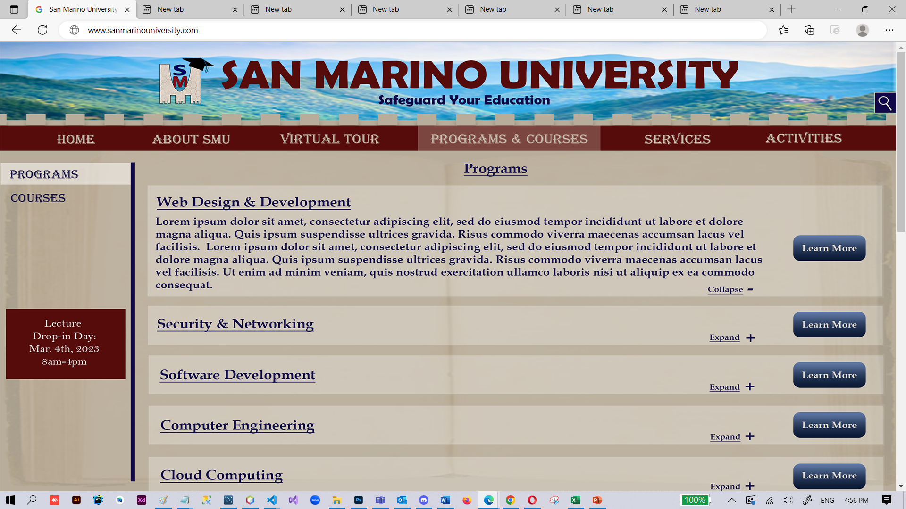
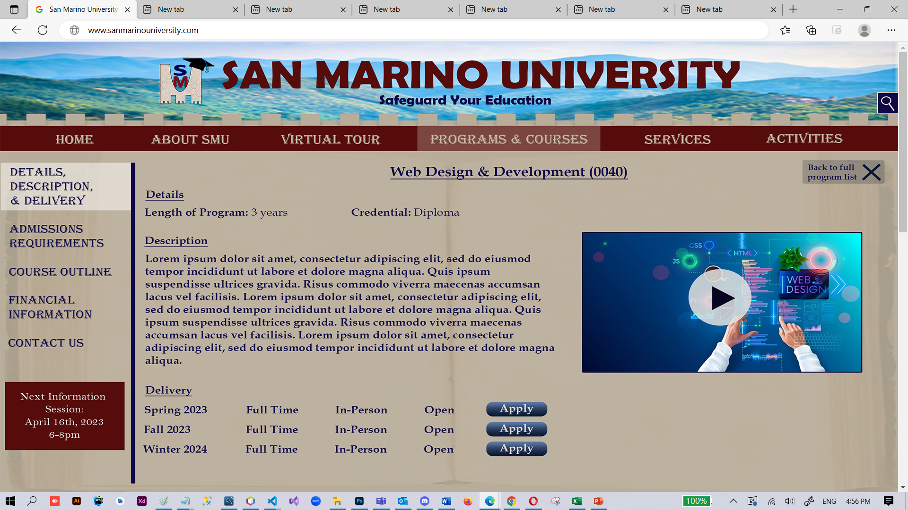

Prototyped Mobile App Game Design - Selkie Quest
In this project, my group needed to create a game related to Selkies (an ancient Irish mythological creature that can
shift from seal to human by shedding their skin when they leave the sea). Because Selkie’s are charming and hardworking,
the family who the Selkie was living with moved its sealskin across town to keep the Selkie from going back to the sea. The Selkie must battle opponents
along the way to get it back but can enlist the help of other mythological creatures (that the player has in their card deck). The screen prototypes below
were designed by me and are for the use cases: purchasing a card package & playing the single player story mode. My inspiration behind this design was a blue
water background for the seal, the gold border for ancient mythology, and the land is an image of Ireland because it was ancient *Irish* mythology.
[Course: User Experience; Created Via: Justinmind Prototyper Application]


Mobile App Design - Group Travel Organizer
I created this app for leaders to keep track of all members involved in a group trip, the excursions planned, and to do items. I chose a tropical picture background with sandy
back colours for everything else to give a vacation feel to the app. This program also makes use of forms, validations, and saves information to MySQL so it can be retrieved
each time the app is opened.
[Course: Programming Mobile Applications I; Created Via: JQuery, JavaScript, HTML, & CSS in Visual Studio Code]
Prototyped Mobile App Design - Change-It-Up
Below is my design for an application in which users can upload pictures of their clothes and put outfits together. The app keeps track of when
something was worn last and will generate outfit suggestions that haven't been worn in a while (based on the weather) to remove the morning stress of trying to think of something new to wear.
[Course: User Experience; Created Via: Justinmind Prototyper Application]


Prototyped Mobile App Game Design - Turn Up the Heat!
This prototype was developed for a telepathic game called "Turn Up the Heat!" In this use case, one player chooses a fish and the other player
has to try and guess the same fish/target. Each time they are wrong, their brain heats up and once the match is over, the loser's mind is blown up.
[Course: User Experience; Created Via: Justinmind Prototyper Application]

Prototyped Data Visualization Dashboard for Smart Home Appliances
The graphs were created in Microsoft Excel and modified for aesthetic appeal then transferred over to Photoshop where I put it all together into
a dashboard design. The logo was also created by me and is a surveillance camera with a bubble/network graph inside in the shape of a drone. It was
meant to signify the monitoring of data for a smart home appliance company.
[Course: Graphic Techniques for Software Design; Created Via: Adobe Photoshop, Microsoft Excel]

Prototyped Web Design for a New University in San Marino
The assignment was to design a website to market a new IT post-secondary school in San Marino to prospective students and their parents around the world using the
country's culture and topology. I used the Apennine mountains in the website header and the tower notches above the navigation to simulate the viewer gazing upon the
gorgeous view of San Marino, medieval-like fonts for a culture that enjoys medieval culture, and an ancient book transparent in the background to add texture, match with
the republic’s heritage status, and to symbolize education. My logo was made to reflect the three famous Monte Titano castles and is a 'U' for university but also a
castle arch with 3 peaks if you flip it upside down.
[Course: Graphic Techniques for Software Design; Created Via: Adobe Photoshop]

 
Fansite for the TV Show Manifest
After being given the wireframe/layout, I designed this fansite below to demonstrate grids, links, two-tiered navigation menus, adding videos,
adding images, creating tables, responsiveness, and more.
[Course: Web Foundations; Created Via: Visual Studio Code]


Business Advertisement for Salon Hair Colouring
An advertisement for the service of hair colouring/dye at a salon. I took a normal portrait of a girl and used the image trace function in Illustrator, set to black and
white. This removed the body and allowed me to draw focus to the hair and segment the image to colour individual strands.
[Course: Graphic Techniques for Illustration; Created Via: Adobe Illustrator]

Product/Brand Advertisement for Lipstick
A poster for a lipstick brand, utilizing the mosaic effect of many smaller images overlaying a bigger one.
[Course: Graphic Techniques for Illustration; Created Via: Adobe Photoshop]

Website Advertisement for Hot Chocolate
A website poster for a new type of 'hot chocolate' (the theme given to us). I included an image with a frothy texture, a fireplace background, and a snow sprinkle effect
to encourage the viewer to think of that warm feeling they get when drinking hot chocolate by the fireplace on a cold, snowy night.
[Course: Graphic Techniques for Illustration; Created Via: Adobe Photoshop]

Graphic Illustrations for a Children's Book
This children's book about a fish getting scared and seeking therapy was written and illustrated by me. The images were created using the curvature pen tool,
the brush tool, effects/filters, gradients, etc.
[Course: Graphic Techniques for Illustration; Created Via: Adobe Illustrator]